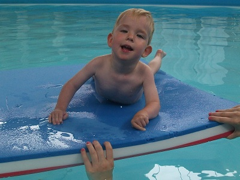
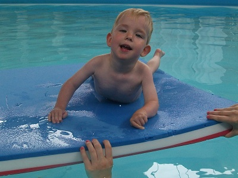

Donate
Online
We have now set up a Just Giving page where you can donate online by clicking on the link below:-
Just Giving: Jacobs Footstseps
Cheques
We are also able to accept cheques. These should be payable to 'Tree of Hope Children's Charity' with Jacob Wright written clearly on the back.
These should be sent to:
Tree of Hope Children's Charity
43a Little Mount Sion
Tunbridge Wells
Kent
TN1 1YP
Gift Aid
If you are sending a cheque and you are a tax payer, Gift Aid can be claimed
which is worth an extra 25% on your donation. This is paid by the government.
Please fill in a Gift Aid form which can be downloaded by clicking on the link below
and include it with cheque as this will help us reach our target quicker. 
Text
Finally you can also donate by text by texting JAKE65 and the amount to 70070.
An example is shown in the image on the right.